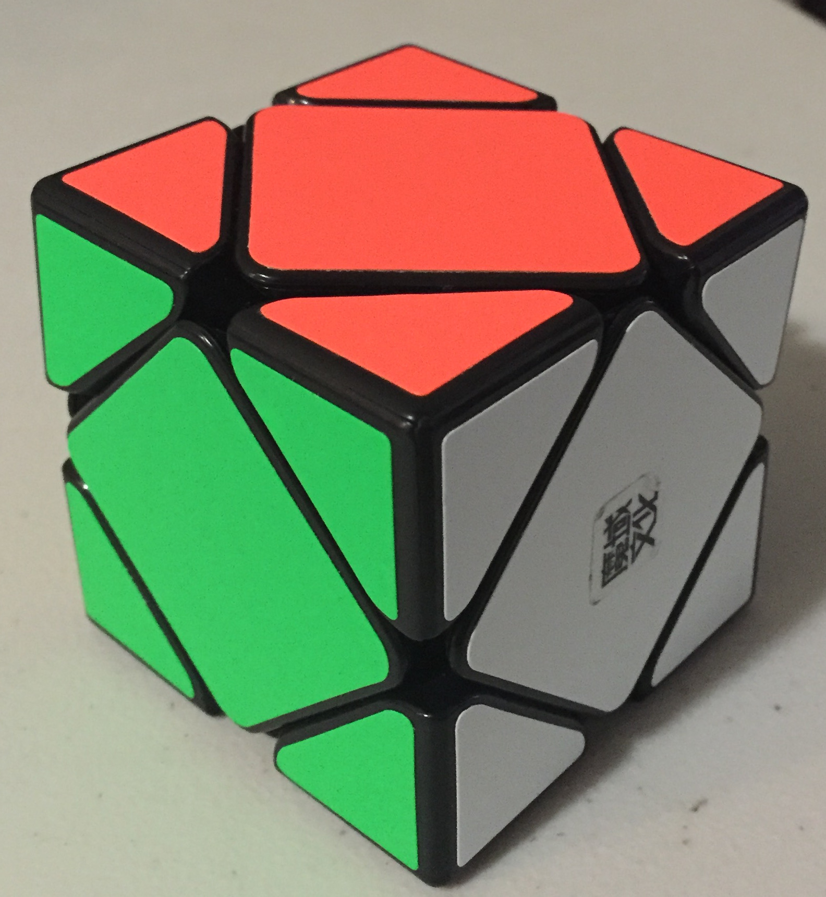
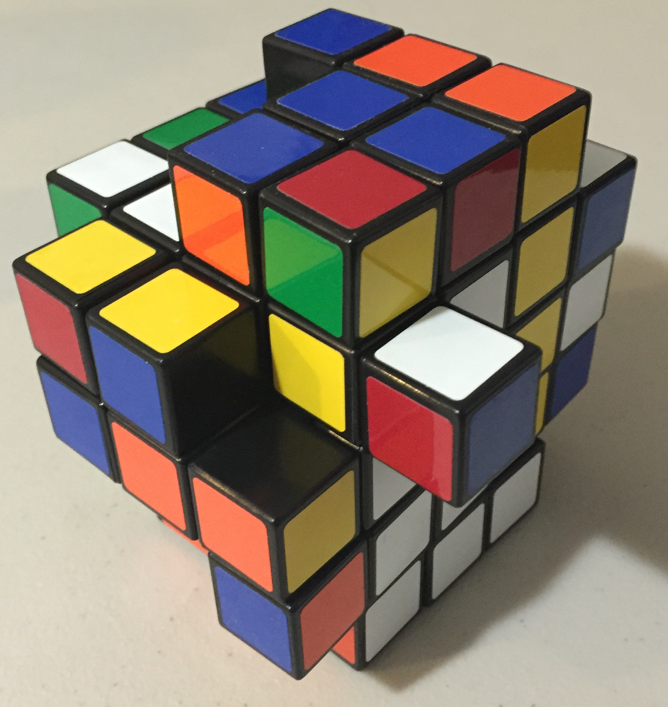
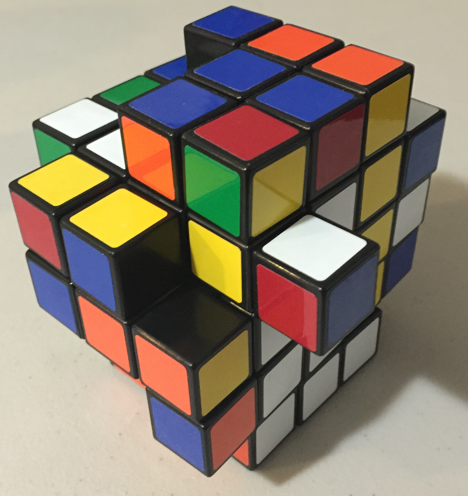

Introduction
Cubing is perhaps slang for “solving a twisty puzzle”—not just Rubik's cubes, since there are many different types of cubes beyond those (and many producers of said cubes beyond Rubik's).
I enjoy cubing greatly, and own a few cubes myself. I don't speedsolve cubes per se, but I do record my personal bests for each cube I own.Cubes I own
Cyclone Boys 2x2 (stickerless)


| Statistics: Cyclone Boys 2x2 | |
|---|---|
| Personal Best | 5.42s |
| Best 5-average | 12.38s |
| Average | 15s |
| Method | Beginner's |
| Quality | 4/5 |
A gift from a good friend, this is the better of the two 2x2's I owned, the other being a Rubik's brand. It's sustained all of the abuse (read: travel) that I've incurred on it quite well. (If it weren't for me, this cube would score a 5/5.)
MoYu Skewb (magnetic)

| Statistics: MoYu Magnetic Skewb | |
|---|---|
| Personal Best | 20.13s |
| Best 5-average | 27.46s |
| Average | 30s |
| Method | Beginner's |
| Quality | 4/5 |
This was one of the first cubes I owned. The magnets are hardly noticeable, I think, but it turns quite well. When speedsolving this cube, the lack of corner-cutting is evident, leading to awkward, brief pauses of re-aligning the cube before continuing. This is also one of my favorite cubes to solve, due to how fun it is to turn.
Rubik's 2x2 (tiled; modified)

| Statistics: Rubik's 2x2 | |
|---|---|
| Personal Best (unmodded) | 15s |
| Personal Best (modded) | 1m34s |
| Average (modded) | 1m00s |
| Quality | rubik's/5 |
This is my first attempt at a cube mod. It was originally a regular ol' 2x2 (also my first 2x2). It turns decently for a Rubik's brand. I forgot what I was originally trying to do in modifying this, but after a good amount of time struggling with the pieces, I eventaully popped out one of the corners… breaking the corner in the process. Having broken the cube, I decided to pop off another corner to see if the same thing would happen. And it did. So I decided just to leave it alone, and this is the result.
Solving this thing is much the same as a normal 2x2, except you can do corner permutations by moving a piece into certain axes of rotations. Decently-interesting, if you ask me. It's a bit harder to solve, since the piece seems to be constantly falling out of shape, not to mention I try to use its special property to solve it, which of course takes more time.
The X-Cube
 

| Statistics: X-Cube | |
|---|---|
| Solved? | No |
| Quality | 2/5 |
I haven't solved this one yet. I tried using beginner's method on it, and it didn't work as well as I hoped it might have. Quite a tricky puzzle, and one that I have vowed to solve on my own. I don't know how to solve puzzles of higher orders than 3x3 yet, but I know that center-piece placement algorithms would definitely help me solve this…
As for the turning quality, it's pretty eh. Re-aligning is a pain, and the aligned turns aren't that great when it is aligned. The outer layers turn pretty smoothly, though.